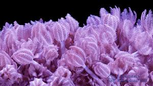
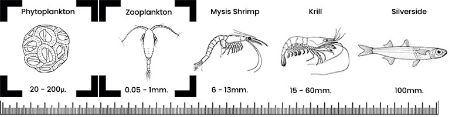

Soft Coral Care
Soft Coral Care
Soft corals are flexible, often tree-shaped or mushroom-shaped corals that do not produce a hard calcium-based skeleton. They are known for their movement, hardiness, and tolerance of changing water conditions, making them popular with both beginner and experienced reef keepers.

Location
Soft corals are native to tropical reef environments in the Indo-Pacific, Red Sea, and Caribbean. They can be found in shallow and deeper reef zones where water movement is present but usually not extremely intense.
Lighting
Most soft corals thrive under low to moderate lighting. Very intense lighting is usually unnecessary, although coloration and growth may vary depending on the species, fixture, and placement depth.
- Low Light: 30–75 PAR
- Medium Light: 75–120 PAR
Water Flow
Moderate, indirect water flow is ideal. Water movement helps prevent detritus from collecting on the coral and creates the gentle swaying motion associated with many soft coral species. Avoid directing a powerful stream of water at the coral.
Feeding
Most soft corals rely heavily on photosynthesis, but they may also benefit from dissolved nutrients and fine particulate foods. Some reef keepers use amino acids or phytoplankton to support coloration and growth.

Propagation
Soft corals are generally easy to propagate. Small branches or sections can be cut and attached to new rock using coral-safe glue, rubber bands, mesh, or other secure methods. Most healthy specimens recover and attach quickly.
A Word of Caution
Some soft corals, including leather corals and toadstools, can release chemicals that may slow the growth of neighboring corals. Activated carbon, good filtration, and regular water changes can help reduce this risk.
Acclimation
Soft corals usually tolerate aquarium changes well, but gradual acclimation is still recommended. Drip acclimation can help them adjust to changes in salinity, temperature, and water chemistry. New corals should also be introduced to stronger lighting gradually.